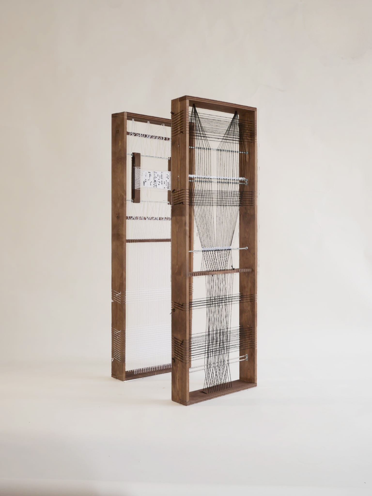
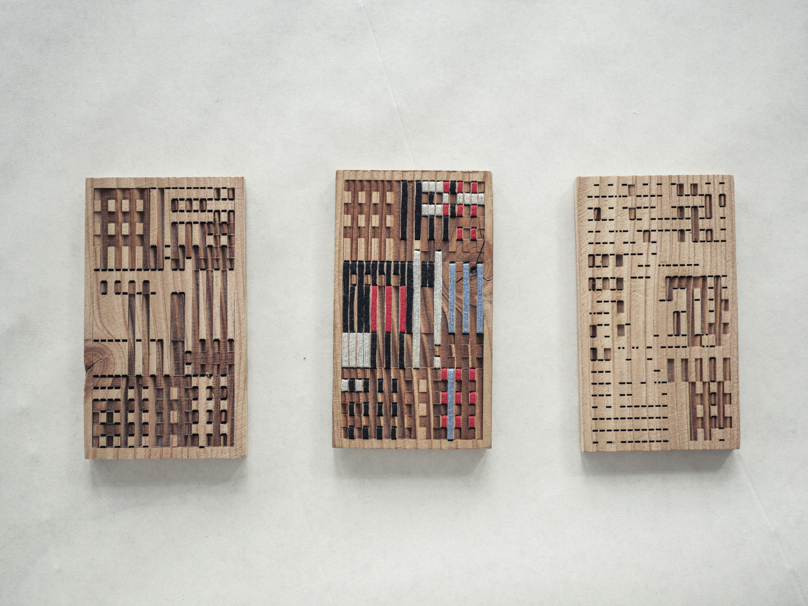
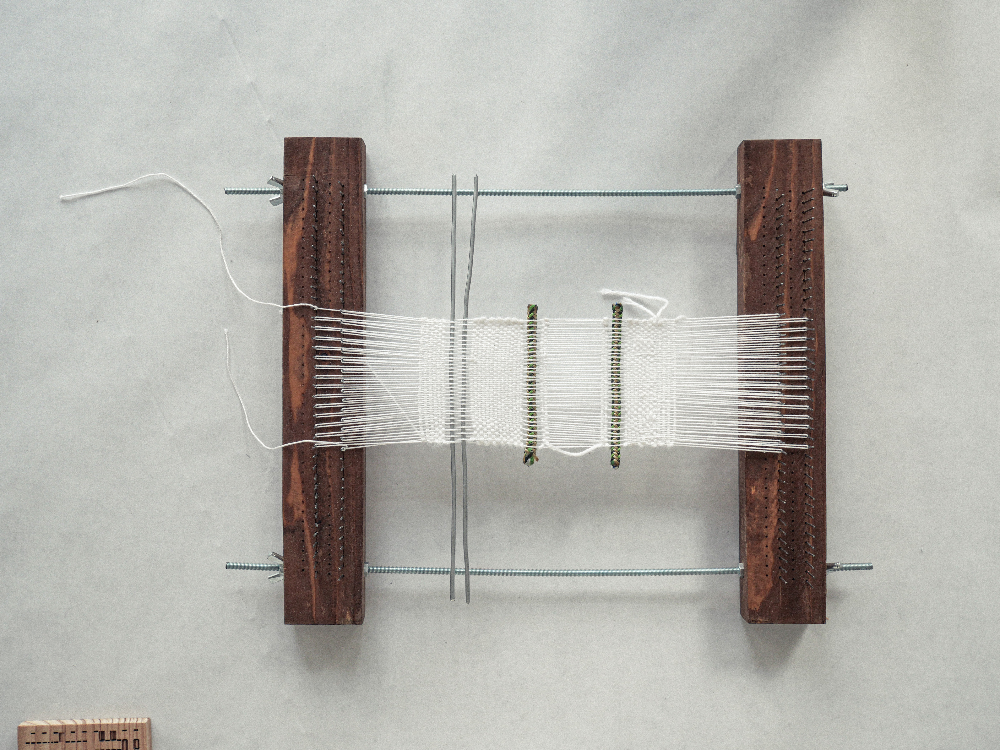

Cette recherche explore les potentiels du tissage en tant que langage abstrait et exploratoire. En intégrant des structures/objets directement à la trame et en jouant sur des basculements d’échelle, l’expérimentation transforme le textile en une structure complexe. L’ornementation y est révélée : elle n’est plus motif passif, mais une construction architecturée qui fonctionne à la manière d’un langage programmatique.
Chaque pièce produite devient une banque de données artisanale, un espace de mémoire physique où l’information est archivée dans la matière. L’enjeu est de pousser plus loin cette analogie entre textile et code : l’ornementation architecturale peut-elle être pensée comme un outil de codification abstraite, capable de stocker de l’information sous une forme non figurative ?


